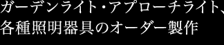

工房陶夢の来待石でつくるストーンライト（石の灯り）は全て一つ一つを手作業で加工しています。
庭やアプローチの照明、ガーデンライトなど全てオーダーメイドとなっています。
屋内外やインテリアなど用途やご要望に応じて製作をしておりますので、お気軽にお問い合せ、ご相談下さい。
ストーンライトの他、和紙照明、景観照明、店舗照明、ライトアップなど照明全般についてもご相談を承ります。
＜お問い合わせ先＞
工房陶夢
〒690-0887 島根県松江市殿町201
TEL：0852-61-1788 FAX：0852-26-3226